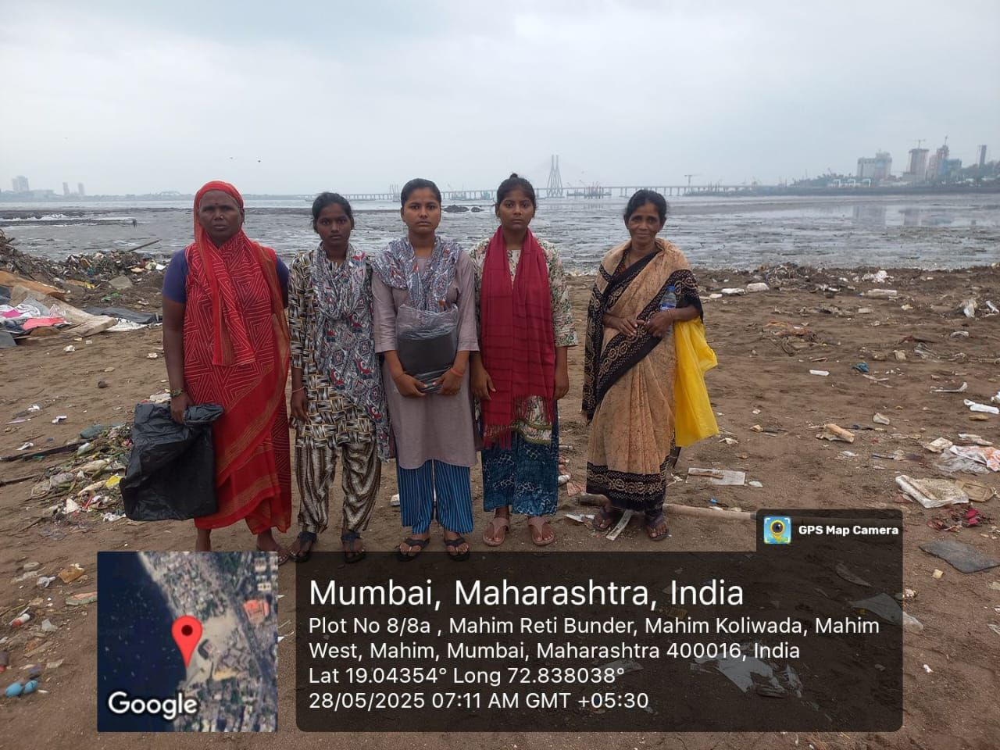
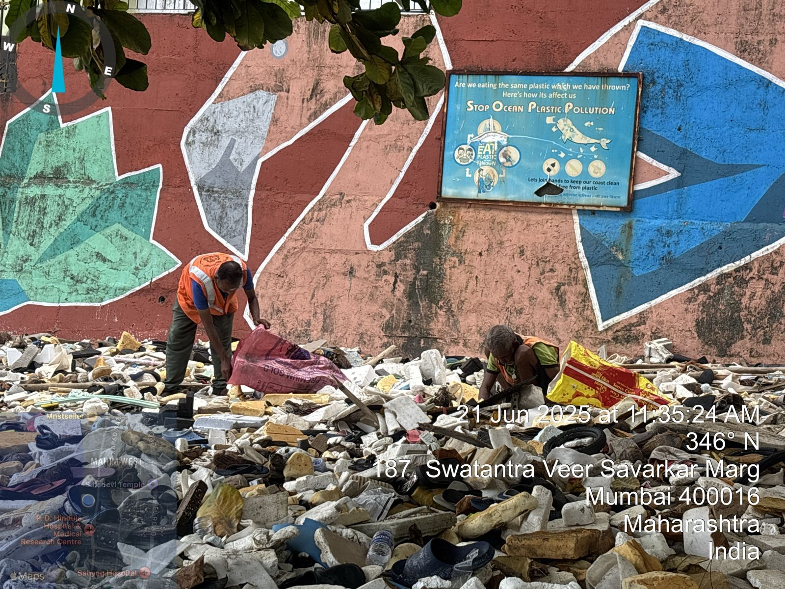
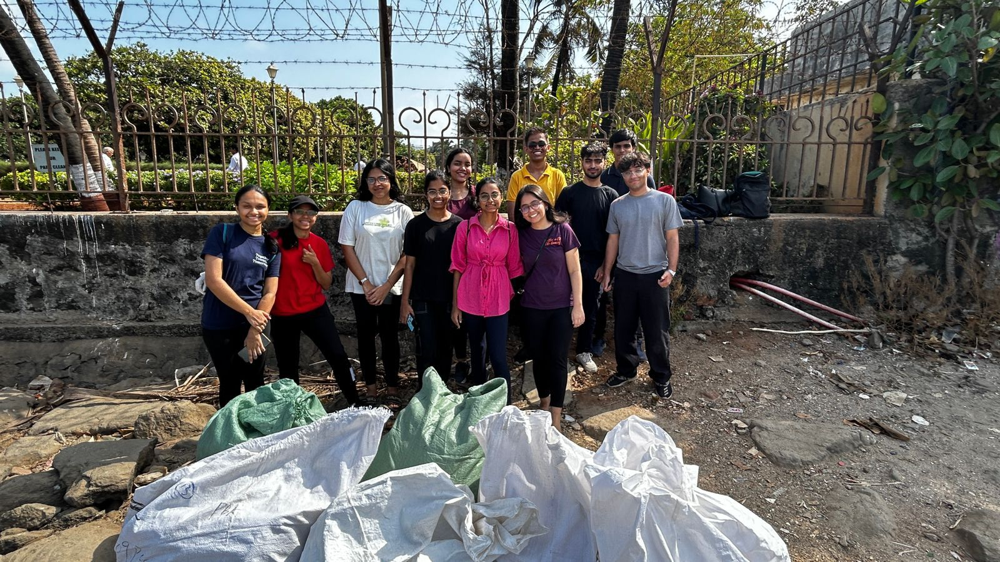
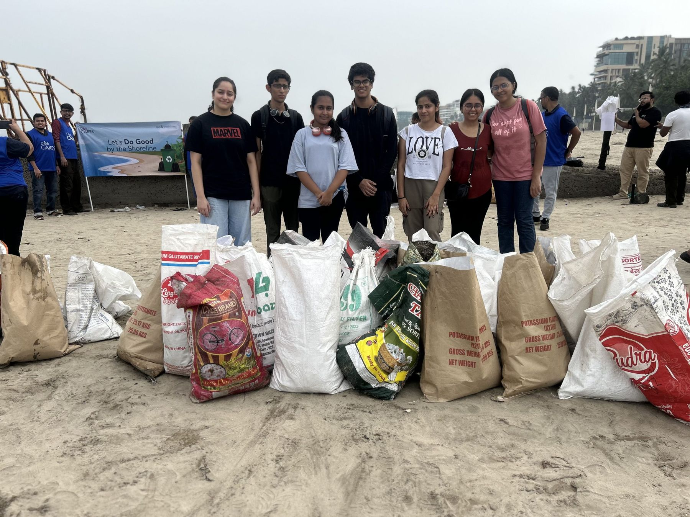

Plastic doesn't disappear. It drifts.
Plastic is one of the most widely used materials today. Thrown away carelessly, it washes into drains, creeks and the sea, where it can stay for hundreds of years.

We pull plastic off Mumbai's coastline, send it to be recycled, and create paid work for the women waste-pickers who recover it.
The numbers so far, from our drives on Mumbai's coast and the credits that fund them.
Taken off the shoreline and sent for recycling.
Run on Mumbai's coast with our partners.
Employed on our drives and recognised for their work.
To companies offsetting their plastic footprint.
What washes up on Mumbai's shore
Plastic is one of the most widely used materials today. Thrown away carelessly, it washes into drains, creeks and the sea, where it can stay for hundreds of years.
Our waste system leans on waste-pickers, yet their work is rarely valued or fairly paid.
What if pulling plastic out of the sea could also create livelihoods? That's Project Sanchay. We gather the plastic, send it to be recycled, and turn the work into income.
Five steps, and every one of them is something you can see on the ground.

A crew of women waste-pickers and a supervisor work the coastline at Mahim Causeway. Our volunteers manage the site and keep count.

What comes off the beach is mixed. We sort it by type so each kind of plastic can go where it will be recovered best.

Every shift is photographed with a GPS and time stamp, and every bag is weighed, so each kilo can be traced back to the day and place it was recovered.
With Yashlok Welfare Foundation, the plastic goes to recovery and recycling facilities and comes back as useful things: raincoats for municipal workers, helmets for police.
Companies buy plastic credits for the plastic we recover. That money pays the crew and funds the next drive.
A plastic credit is only worth something if you can prove the plastic was really recovered. So we keep a paper trail for every batch, from the shoreline to the recycler.
Each collection is photographed on site with a GPS location and time stamp.
Bags are weighed and entered against a batch, with the site, the date and the crew who worked it.
The batch is segregated by type and handed to our recycling partner, who confirms what they received.
A company's credits are linked to real batches, so they can see the photos and weights behind every rupee.
This is a sample showing what a batch record holds. The weight here is for illustration.
Plastic that once threatened marine life now protects the people who keep our cities running.
With Yashlok Welfare Foundation, we gave raincoats made from recycled sea-waste plastic to Navi Mumbai Municipal Corporation workers. The team was felicitated by Commissioner Dr. Kailash Shinde and Mr. Kishore Bhatija of Inorbit Malls and K Raheja Group.
Through the "Waves to Wheels" CSR project by IIFL Foundation and Yashlok Welfare Foundation, Rajasthan Police received ISI-certified helmets made from recycled ocean and land plastic. The clean-ups behind them were run by Enactus H.R. College students.
For Sanchay to grow, it has to pay for itself. Two revenue streams connect recovering plastic with earning from it.
Plastic credits are our main revenue stream. Every credit funds recovery, sorting and the people who do it.
Three pilot phases at Mahim Causeway and Reti Bunder, run with Yashlok Welfare Foundation under our Samudra Manthan project, tested the waste-offsetting model that Sanchay grew from. Over 650 kg of sea waste was collected and sent for recycling.
Sanchay launches as a waste-offsetting initiative. On 14 July, raincoats made from recycled sea-waste plastic are handed to Navi Mumbai Municipal Corporation workers.
At the Enactus India National Exposition 2025, Sanchay was selected among the top 20 projects nationwide in the Early Stage category.
Enactus India NationalsTwo volunteers represented Sanchay at the Bombay Exhibition Centre, meeting global organisations on recycling, funding and QR-based waste tracking.
Clean-ups by Enactus H.R. College students feed the IIFL Foundation and Yashlok Welfare Foundation project that turns ocean plastic into helmets for Rajasthan Police.
Sanchay operations at Mahim Causeway: 4 workers and a supervisor, with 5 Enactus volunteers overseeing every day.
A beach clean-up and awareness drive at Girgaon Chowpatty with over 200 students from MSPT and VBMM schools.
At Envision 2026, part of E-Summit '26, Sanchay was among the top 40 teams invited to present, from more than 490 colleges.
E-Summit · IIT RoorkeeNavi Mumbai Municipal Corporation recognised Enactus HRC for its work under Project Sanchay.
Shifts on the shore, the bags, the people. Tap any photo to see it bigger.
We want a system where plastic waste is treated as a resource, not something to throw away, and where the people who recover it get greater opportunities.
Team Sanchay · Enactus HRC

Buy plastic credits, sponsor a clean-up, or bring Sanchay into your CSR plan. Real change happens when environmental sustainability and social impact work together.